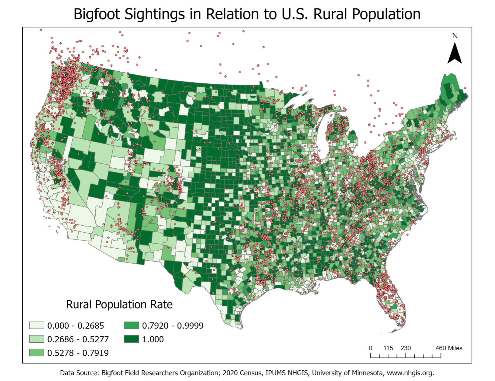

Tracking Bigfoot Sightings

Project Description
- Completed as a project for GEOG:2500: Foundations of GIS
- Sighting data taken from the Bigfoot Field Researchers Organization
- 2020 Census Data taken from the National Historical Geographic Information System (NHGIS)
- Imported as a csv file
- Streamlined rows and columns
- Joined the spatial data (sightings) with the non-spatial data (census)
- Created the final map in ArcGIS
- Analyzed spatial patterns and sighting data’s correlation with rural populations
What I Learned
- How to simplify data without removing important information or involving inherit biases
- How to effectively translate data from multiple sources into a clear visualization
- How to utilize design principles so that a visualization is constructively delivered